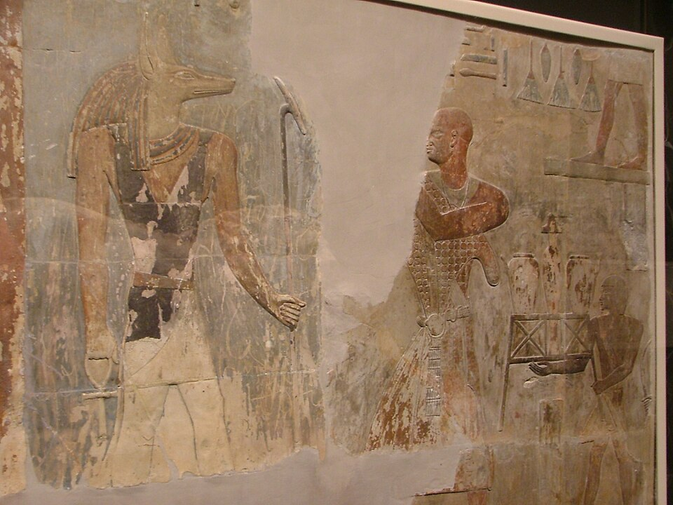

До того как Фивы сделали своим главным богом Амона, над фиванском номом хозяйничал Ментху — бык войны. Его звали «бык своей матери» (Камаутеф): необузданная сила, рождённая не для пахоты, а для боя. Средние фараоны выходили на войну под его именем: «царь — Ментху в битве, не знает отдыха, когда схватка». Он — сам вихрь сражения: жажда крови, слепая доблесть, которая рвёт строй.
Его главный город — Армант (греч. Гермонфис), к югу от Фив, где стоял его храм с колоннами и священное озеро; второй — Медамуд близ Фив; третий — Тод с храмом из белого известняка. В Карнаке у него был свой храм с отдельным двором — бог войны не ютился в чужом доме.
Как его видеть
- Мумифированный мужчина с соколиной головой, увенчанной диском и двумя высокими перьями, увитыми уреями.
- В руках — ани-жезл (символ власти) ииногда хешепеш — серп для ритуального усмирения.
- Как бык — с солнечным диском между рогами: «Бык, что сокрушает тела».
- В битве его образ — бык, летящий на врага, или сокол, реющий над головами: обе формы — молниеносный удар.
Супруги
У Ментху четыре «жены» — четыре богини, каждая со своим святилищем: Рат-тауитферет («Ра — владычица великого трепета»), Тефнут, Хор-младенец (по-гречески Харпократ) и Рененутет — змея-кормилица и госпожа амбаров. Так при боге войны собрался целый «двор» плодородия и страха: война кормит мир и пугает его в равной мере.
Бык Бухис
Земным воплощением Ментху был бык Бухис — чёрный бык с отметинами, как Апис, и хоронился по-царски: при Арманте нашли Бухеум — подземную галерею саркофагов священных быков. Царь приводил Бухиса в храм и «обнимал» его: обряд для фараона — личное рукопожатие с войной. «Я был Ментху, когда был юн», — говорит Рамзес II на стене Кадешской битвы.
Ментху и фараон
Среднее Царство выросло из фиванских родов — и их бог-кулак стал богом трона: «Дети Ментху» — так звали фиванских воинов. Фараон в битве не командовал издалека — он был Ментху, «бык, что бодает», и его ярость была частью божественного порядка, а не хаоса: в руках царя даже свирепость служит Маат. Позже, с новым могуществом Фив, Амон «вобрал» военного духа в себя (Амон-Ра-Ментху), и сам Ментху отступил в тень — но имя его фараоны носили в тронных формулах до самого конца.
Интересные факты
- В надписи Рамзеса II при Мегиддо бог войны идёт «впереди войска» как Ментху: фараон лишь его колесничий.
- Серп-кинжал хешепеш, который держит Ментху, — ритуальный инструмент «усмирения» быка-жертвы; бог войны и жрец заклания — один жест.
- Армантский храм Ментху достраивали Птолемеи: последние строительные надписи — I век до н. э., культ дожил до Рима.
- «Ментху-хотеб-иб» («Ментху доволен сердцем») — личное имя эпохи Среднего Царства: ребёнок под именем войны — как талисман.